Squelette LCS SPIP (LCS-SKEL)
Version : 2.0-1
- Paquet module : 2.0-1
- SPIP : 1.9.2c
EVOLUTIONS GENERALES du squelette par rapport à la version 1.0.9
-
Nouvelle version, nouveau squelette.
Associé au plugin du même nom, l'affichage public devient entièrement paramétrable depuis l'espace privé par l'administrateur du LCS.
Plusieurs plugins sont livrés avec le paquet module.
-
Pour vos remarques et/ou suggestions sur le squelette, un lien est disponible en pied de page (Equipe TICE - CRDP Basse Normandie)
-
Installation :
Comme pour tous les paquets modules.
-
Configuration de l'affichage :
-
Pour pouvoir paramétrer l'affichage, l'administrateur doit obligatoirement avoir préalablement validé les plugins CFG et Lcs-Skel.
Pour valider les plugins, se rendre sur la page "Gestion des plugins" ( Onglet "Administration", sous-onglet "Gestion des plugins" et valider les deux plugins.).
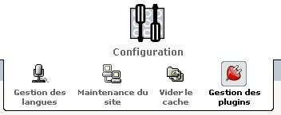
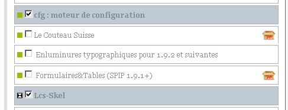
-
Si ces deux plugins ne sont pas validés, seul le squelette "par défaut" sera opérationnel.
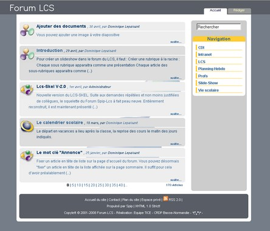
Affichage par défaut
-
Une fois ces deux plugins validés, rendez-vous sur la page "Configuration Lcs-Skel"( Onglet "Administration", sous-onglet "Configuration Lcs-Skel".)
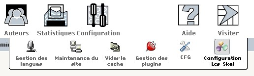
-
Vous arrivez sur la page de configuration générale de l'affichage qui se compose de la manière suivante. (voir l'image si-dessous)
-
A gauche, le lien vers la documentation (qu'on retrouve sur toutes les pages de la configuration de l'affichage public)
-
A gauche (ou à droite en fonction de votre choix de l'affichage de l'espace privé), les liens vers les autres page de configuration de l'affichage public (qu'on retrouve sur toutes les pages de la configuration de l'affichage)
-
Au centre, le formulaire de configuration générale
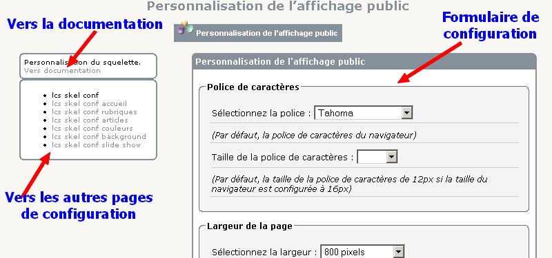
Configuration générale
-
Police de caractères : Par défaut, c'est la police de caractères du navigateur qui est active.
-
Taille de la police : Par défaut, la taille de la police de caractères est de 12px
(en fonction de la configuration du navigateur).
En règle générale, et pour respecter les normes d'accessibilité, il est préférable de ne pas imposer de taille de police.
Toutefois, en fonction de la police de caractère choisie précédemment, il est possible qu'un ajustement soit nécessaire.
-
Largeur de la page : Trois posibilités de largeur de page :
-
800 pixels. (largeur par défaut.)
-
1024 pixels.
-
Tout l'écran. (Cette option peut parfois, dans le cas ou la définition d'écran est trés grande, "casser" la mise en page et diminuer l'accessibilité.)
-
Position des blocs : Par défaut, la colonne latérale contenant le menu (par défaut) est positionnée à droite.
Vous pouvez choisir de la positionner à gauche.
-
Affichage des onglets: Vous disposez d'un menu horizontal par onglets.
Par défaut, seuls les onglets "Accueil" et "Rédiger" sont affichés.
Vous pouvez cependant afficher les onglets suivants :
-
Onglet [ Accueil ] : Renvoie vers la page d'accueil
-
Onglet [ Rédiger ] : Renvoie directement vers la page de rédaction d'un article.
(Dans les versions précédentes, le lien "Rédiger un article" renvoyait vers l'espace privé du site)
-
Onglet [ Plan ] : Renvoie vers le plan du site
-
Onglet [ Contact ] : Renvoie vers la page de contact de l'administrateur. Attention, il faut que l'admin soit associé à l'id=1
-
Onglet [ Evénements ] : Renvoie vers la page listant tous les événements saisis dans l'agenda public.
Attention, il est nécessaire, pour afficher cet onglet, d'avoir validé les plugins "Agenda" et "Widget Calendrier"
-
Onglet [ Recherche ] : Renvoie vers la page de recherche sur le site. Cette page vous propose le formulaire de recherche générale ainsi que la recherche multi-critères par mots-clé.
Attention, il est nécessaire, pour afficher cet onglet, d'avoir validé et configuré le plugin "Recherche Multi-Critères"
-
Onglet [ Rubrique ] : Vous pouvez choisir d'afficher un onglet pointant vers une rubrique de votre choix.
Si vous choisissez un rubrique dont le titre est long (plus de 16 caractères), il est préférable de renommer votre onglet.
Sinon, le titre de la rubrique sera affiché et éventuellemnt tronqué à 16 caractères
-
Onglet [ Article ] : Vous pouvez choisir d'afficher un onglet pointant vers un article de votre choix.
Même contraintes que pour l'onglet "Rubrique".
Configuration de la page d'accueil
-
Affichage et position des blocs jumeaux : Vous pouvez afficher des "blocs jumeaux" sur votre page d'accueil,
choisir leur position (au dessus ou au dessous de la liste d'article si celle-ci est présente) et choisir leur contenu.
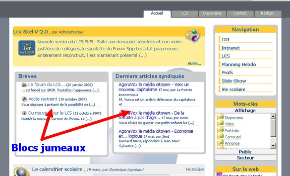
-
Contenu des blocs jumeaux :
-
Brèves Affiche les trois dernières brèves
-
Sites Affiche les trois dernièrs sites référencés
-
Syndics Affiche les trois dernièrs articles des sites syndiques, par date de publication.
-
Messages Affiche les trois dernièrs messages
-
Mots-clé Affiche les mots clé (sous forme de menu "Accordéon")
-
Auteurs Affiche les auteurs ayant publié au moins un article.
-
Diaporama d'images Affiche un slide-show d'images, dont chaque image pointe vers l'article auquel elle est associée.
Vous devez préalablement avoir au moins un article attaché au mot-clé "Slideshow-accueil"
-
Derniers articles : Vous pouvez choisir le nombre d'articles (3, 5 ou 10)
affichés dans la liste des derniers articles publiés.
-
Contenu du bloc latéral : De la même façon que pour les blocs jumeaux,
vous pouvez choisir les blocs affichés dans la colonne latérale.
-
Brèves Affiche les trois dernières brèves
-
Sites Affiche les trois dernièrs sites référencés
-
Syndics Affiche les trois dernièrs articles des sites syndiques, par date de publication.
-
Messages Affiche les trois dernièrs messages
-
Mots-clé Affiche les mots clé (sous forme de menu "Accordéon")
-
Auteurs Affiche les auteurs ayant publié au moins un article.
-
Liens Podcast et fil RSS Affiche le lien vers le fil RSS, le lien vers le logiciel iTunes (voir le mot-clé "Podcast"), et,
si vous avez validé le plugin Spip-List et créé une liste de diffusion acceptant les inscriptions, un lien vers l'inscription à cette liste.
Configuration de la page "rubrique"
-
Affichage et position des blocs jumeaux : Vous pouvez valider l'affichage des "blocs jumeaux" sur les pages "rubrique"
et choisir leur position (au dessus ou au dessous de la liste d'article si celle-ci est présente) ainsi que choisir leur contenu.
-
Contenu des blocs jumeaux : Le choix du contenu des blocs dans les pages rubrique est limité à :
-
Brèves les brèves de la rubrique
-
Sites les sites référencés dans la rubrique
-
Syndics les dernièrs articles des sites syndiques de la rubrique, par date de publication.
-
Messagesles messages associés aux articles de la rubrique
-
Derniers articles : le nombre d'articles (3, 5 ou 10) de la rubrique (par défaut 5).
Configuration des couleurs
-
Toutes les couleurs sont modifiables. Une palette est affichée lorsque vous cliquez dans le champ d'une couleur.
Pour afficher la palette dans un autre champ, il faut fermer préalablement la palette ouverte.
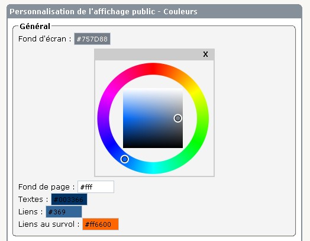
Il est possible de saisir directement la valeur littérale de la couleur (white, blue, black, red, ...) dans la zone de saisie.
Cette option permet de choisir la valeur "transparent" si vous désirez supprimer une couleur.
Configuration de l'arrière plan
-
Vous pouvez importer une image d'arrière paln et fixer les paramètres de répétition et de position.
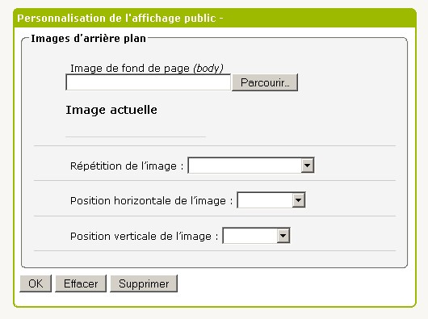
Configuration de la rubrique Slide-show
-
Vous pouvez créer des présentations "slide-show" ou "diaporama" (façon power point).
Cette fonction utilise le slide-show S5 d'Eric Meyer,
adapté pour SPIP par Pierre Bourgeois, Emmanuel Saint-James, Fil
et est disponible en test
-
Selectionnez la rubrique racine contenant toutes les présentations puis validez (OK).
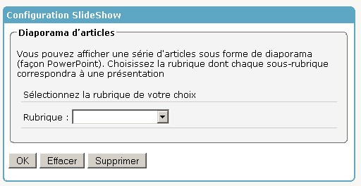
-
Choisissez le thème utilisé pour chaque présentation parmi la liste des thèmes disponibles. Validez.
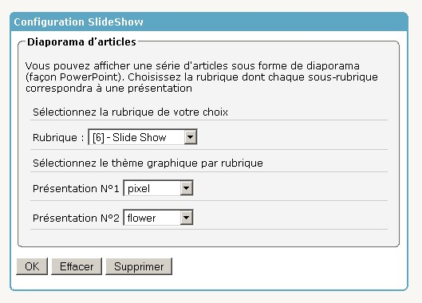
Gestion des plugins :
-
Outre les deux plugins nécessaires à la configuration du squelette, d'autres plugins sont livrés avec la paquet module.
Certains sont très vivement recommandés, d'autres le sont moins mais peuvent néanmoins offrir des fonctions intéressantes.
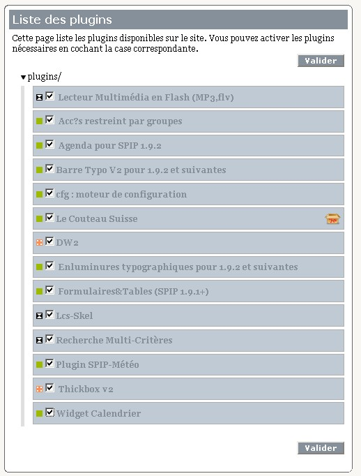
Plugins recommandés
-
Ces plugins impactent directement l'affichage public. Il est donc fortement recommandé de les valider.
-
Lecteur Multimédia en Flash (MP3,flv) : Permet d'inserrer un lecteur (audio ou vidéo) ou une play-list directement dans un article.
Pour plus d'infos, voir Documentation du plugin Lecteur Multimédia
-
Agenda et Widget calendrier : Indissociables l'un de l'autre, ces deux plugins sont nécessaire à la gestion de l'agenda et des événements.
Pour plus d'infos, voir Documentation des plugins Agenda et Widget calendrier
-
Couteau suisse : Comme son nom l'indique, ce plugin offre de nombreuses "lames" permettant d'améliorer tant le confort dans l'espace privé que l'affichage public. Il est recommendé d'activer les lames suivantes :
-
Belles URLs
-
Un sommaire pour vos articles
-
Blocs Dépliables
-
Découpe en pages et onglets
-
SPIP et les liens… externes
-
Supprime le numéro
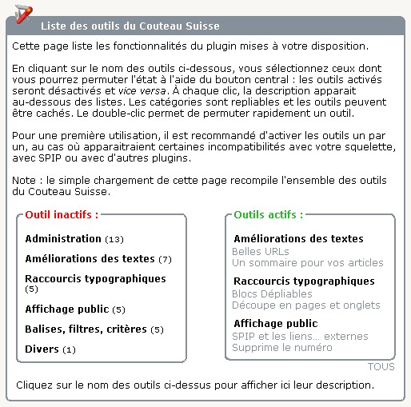
Pour plus d'infos, voir Documentation du plugin Couteau Suisse
-
Recherche Multi-Critères : La recherche multicritères par mots-clés permet de rechercher des articles sélectionnant un ou plusieurs mots-clé. La recherche retournera la liste d'articles associés à ces mots-clé. (Développé par l'équipe TICE - CRDP Basse-Normandie)
Pour plus d'infos, voir Documentation du plugin Recherche Multi-Critères
-
Thickbox v2 : Ajoute un effet thickbox sur les liens de type image.
Pour plus d'infos, voir Documentation du plugin Thickbox v2
Autres plugins
-
Ces plugins offrent des fonctions intéressantes, mais n'impactent pas le fonctionnement du squelette.
-
Barre Typo V2 pour 1.9.2 et suivantes et Enluminures typographiques pour 1.9.2 et suivantes : Améliore la barre typographique de SPIP et rajoute des raccourcis typographiques et des boutons à la barre typographique enluminèe.
-
Formulaires&Tables (SPIP 1.9.1+) : Gestion et administration de formulaires éditables. Ce plugin permet également la publication de sondages et enquêtes, la collecte des reponses dans la base de données et le téléchargement au format csv.
Pour plus d'infos, voir Documentation du plugin Formulaires&Tables
-
Accés restreint par groupes : Ce plugin permet de restreindre l'affichage de certaines rubriques à un utilisateur ou un groupe d'utilisateurs, ceci tant dans l'espace publique que dans l'espace privé.
Pour plus d'infos, voir Documentation du plugin Accés restreint par groupes
-
DW2 : Gestion et suivi des documents proposés en téléchargement sur ce site.
Pour plus d'infos, voir Documentation du plugin DW2
-
SPIP-Listes : Listes d’informations par email.
Pour plus d'infos, voir Documentation du plugin SPIP-Listes
-
Plugin SPIP-Météo : Prévisions météo dans vos squelettes.
Pour plus d'infos, voir Documentation du plugin SPIP-Météo
**********************************************************
Squelette LCS SPIP
Version :
- Paquet module : 1.0-9
- SPIP : 1.9.2c
EVOLUTIONS GENERALES du squelette par rapport à la version 1.0.6
Généralités
Ajout d'un lien sur le(les) auteur(s) d'un article. Ce lien pointe vers une nouvelle page auteurs.html
Page auteur.html
- Permet d'envoyer une message à l'auteur
- Liste tous les articles de l'auteur
Images et photos
Deux nouveaux modes d'affichages des images et(ou) photos sont proposés
Pour utiliser ces possibilités d'affichage, vous devez tout d'abord créer les mots clé "Diaporama" et "Portfolio". Le nom du groupe de mots n'a pas d'importance.
- Affichage sous forme de Diaporama :
- Ajoutez vos images à l'aide du champ "Ajouter un document"(et non "Ajouter une image")
- Associez à l'article le mot clé Diaporama
- Si vous avez saisi un texte dans votre article, le diaporama sera affiché au dessous de ce texte.
- Affichage sous forme de Portfolio :
- Ajoutez vos images à l'aide du champ "Ajouter un document"(et non "Ajouter une image")
- Associez à l'article le mot clé Portfolio
- Si vous avez saisi un texte dans votre article, le portfolio sera affiché au dessous de ce texte.
ASTUCE : Si vous avez plusieurs images (ou photos) à ajouter, vous pouvez le faire en un seule fois. Il suffit pour cela de créer un fichier zip de tous vos fichiers et de selectionner ce fichier lors de l'ajout. Spip vous proposera alors d'installer ce fichier :
- tel quel, en tant qu'archive compressée Zip ;
- décompressé et chaque élément qu'il contient installé sur le site ;
- les deux.
Vidéos
Vous pouvez insérer une vidéo au format FLV dans un article. Elle sera affichée après le texte de l'article. Il suffit pour cela :
- De créer le mot clé Video (le nom du groupe de mots n'a pas d'importance;
- De joindre votre(vos) vidéo(s) au format flv comme document;
- De donner un titre à chaque vidéo jointe;
- Ne pas inclure votre vidéo dans l'article;
- D'associer à votre article le mot clé "Video";
- Lorsque vous visualisez votre article dans l’espace publique, il suffit de cliquer sur le titre de la vidéo situé sous le cadre de visualisation. Si vous avez inséré plusieurs vidéos, les titres de celles-ci seront affichés sous forme de liste.
- Pour convertir vos vidéo au format flv, vous pouvez utiliser Riva FLV Encoder 2.0, (simple et gratuit qui prend en charge les formats AVI, Quicktime, MPEG et WMV) téléchargeable ici ou FFMpeg.
NOUVEAU : Utilisation des PLUGINS
Vous disposez à présent de la possibilité d'utiliser des plugins Spip. Il vous appartient de les valider ou non.
Pour valider ces plugins, ouvrir la page "Configuration -> Validation des Plugins"
Liste des plugin fournis :
- Accés restreint par groupe :
- Ce plugin permet de restreindre l'affichage de certaines rubriques à un utilisateur ou un groupe d'utilisateurs, ceci tant dans l'espace publique que dans l'espace privé.
- Pour plus d'infos, voir la doc du plugin Accés restreint par groupe
- NOTES : La version fournie avec ce paquet à été modifiée pour assurer la compatiblilité LCS. Si vous chargez une autre version de ce plugin, des disfonctionnements sont à craindre
- Barre Typo V2 et Enluminures typographiques
- Le plugin Barre Typo V2 fournit des fonctionnalités supplémentaires à la barre typographique standard. Le plugin Enluminures typographiques ajoute de nouveaux raccourcis typographiques. Ces nouveaux raccourcis typographiques sont dépendants du plugin. Ainsi, si vous supprimez le plugin, ces raccourcis ne seront plus traités par SPIP et viendront polluer vos textes. Aucune procédure de désinstallation automatique de ces raccourcis n’est pour le moment disponible.

- Pour obtenir les fonctionnalités d'aide à la rédaction et les nouveaux raccourcis typographiques, il faut installer à la fois la Barre Typographique V2 et le plugin Enluminures Typographiques.
- Pour disposer uniquement des outils d’aide à la rédaction sans la création de nouveaux raccourcis, il faut installer uniquement la Barre Typographique V2.
- Pour plus d'infos, voir la doc du plugin Barre Typo Enluminée
- Formulaires&Tables
- Le plugin Forms&Tables vous permet de créer des formulaires (ou sondages) ainsi que des tables et de les insérer dans vos articles.
- Les données sont enregistrées, consultables dans l'espace privé et exportable en format CSV pour un traitement externe.
- Pour plus d'infos, voir la doc du plugin Formulaires&Tables
Version :
- Paquet module : 1.0-9
- SPIP : 1.9.2c
EVOLUTIONS GENERALES du squelette
- Généralités
- Mise en conformité W3C de toutes le pages;
- Fermeture de balises;
- Modification de la casse dans les balise html (tout en minuscules).
- Page "Erreur404"
- Affiche une page d'erreur ajoutée dans le squelette;
- Modification de la boucle "principal" (appel de la page erreur404 si pas de rubrique, d'article, ou de brève).
- Sommaire
- Affichage de l'introduction de l'article en lieu et place du chapo;
- Remplacement de #CHAPO par #INTRODUCTION. Celle-ci affiche le descriptif de l'article, sinon affiche les 600 premiers caractères du début de l'article (chapeau puis texte). On évite ainsi les présentations vides;
- Introduction de la fonction pagination : Affichage par page de dix articles, et navigation par page;
- Paramétrage du nombre maxi d'items par page dans ecrire/mes_options.php3;
- Ajout du filtre pagination dans mes_fonctions.php3;
- Ajout de la boucle pagination dans la page sommaire.html.
- ENTÊTE (head)
- Ajout d'un lien vers la page d'accueil sur le titre.
- MENU
- Nouveau menu déroulant;
- Ajout du chemin de l'article (positionnement dans la structure);
- Boucle hierarchie dans article.html.
- ARTICLE
- Remise en forme de la balise AUTEURS pour éviter les répétitions de "poster par" en cas d'auteurs multiples;
- Ajout du filtre "reduire_image";
- Permet de redimensionner une image trop grande. Le redimensionnement est configuré sur une largeur de 600px;
- Ajout du filtre "decouper_en_page";
- Pour découper l'affichage d'un texte d'article trop long, ajouter cinq tirets entre deux lignes lors de la saisie (mon texte {mettre ici cinq tirets} suite de mon texte).
- Modification d'affichage
- Suppression du décalage vertical du texte (voir feuille de style);
- Modification de l'affichage du titre de l'article (voir feuille de style);
- Modification de l'affichage des h3 du contenu du texte de l'article (Balise #TEXTE de Spip).
- BREVE
- Modification d'affichage : Suppression du décalage vertical du texte.
- FORUM
- Idem Article
- Affichage de l'introduction de l'article en lieu et place du texte complet de l'article;
- Suppression de l'affichage des messages liés.
- Pied (footer)
- Affichage de la version de SPIP utilisée.
Responsable du suivi du squelette LCS : Dominique Lepaisant